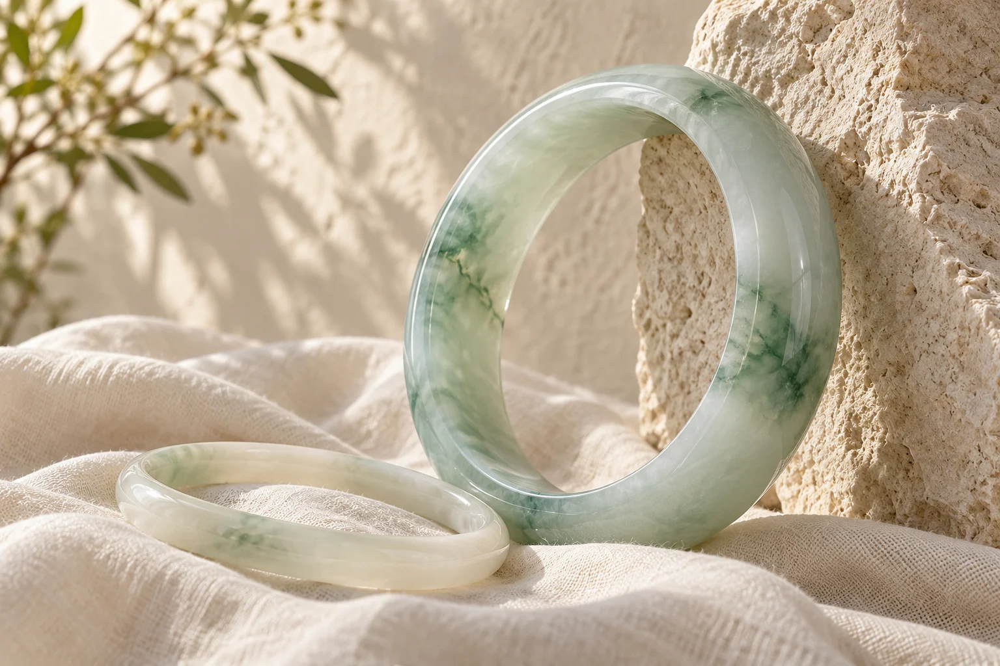
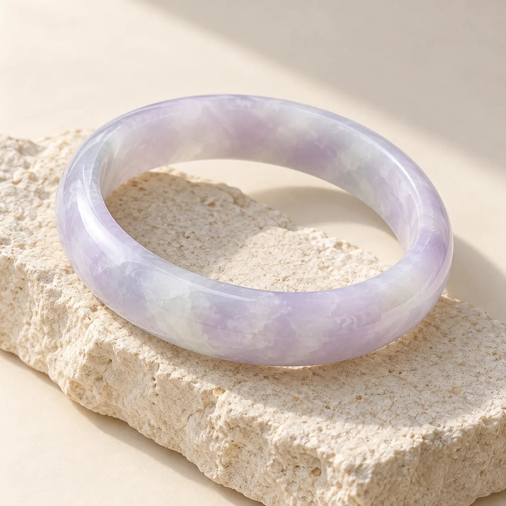

CẨM THẠCH & PHỈ THÚY
Một nét ngọc.
Một nét riêng.
Vẻ đẹp không cần phô trương.
Chỉ một sắc ngọc dịu dàng, đủ để thương,
đủ để giữ bên mình.
◇ Chọn bằng ánh nhìn. Yêu bằng cảm nhận.

Mỗi món, một sắc ngọc riêng
Kích thước rõ ràng, dễ lựa chọn
Xem nhóm Zalo, hỏi qua hotline
DÀNH MỘT CHÚT THỜI GIAN, CHỌN MỘT MÓN THẬT THƯƠNG
Tìm một nét ngọc của riêng bạn.
Chế độ kiểm tra giao diện · Giá và tình trạng là dữ liệu thử, không phải niêm yết cửa hàng.
Gặp ngọc là duyên. Chọn ngọc, cứ thong thả.

NGỌC NHÀ LYN◇
NGỌC & DUYÊN
MỘT CHÚT VỀ NGỌC NHÀ LYN
Ngọc đẹp để ngắm.
Ngọc thương để đeo.
Có người yêu một màu xanh trong trẻo. Có người lại mến nét vân mộc mạc, chẳng giống bất kỳ món nào.
Ngọc Nhà Lyn mong bạn có đủ thời gian để ngắm, để hỏi và tìm ra món ngọc hợp với mình. Ghé nhóm Zalo để ngắm đợt hàng mới; khi cần tư vấn riêng, bạn có thể gọi hotline.
Ghé nhóm Zalo Ngọc Nhà LynHIỂU THÊM MỘT CHÚT, THƯƠNG THÊM MỘT CHÚT
Chậm lại, hiểu về ngọc.
MỘT MÓN NGỌC HỢP MÌNH BẮT ĐẦU TỪ MỘT CUỘC TRÒ CHUYỆN
Bạn đang tìm một sắc ngọc nào?
Ngắm hàng mới trong nhóm Zalo, hoặc gọi 0979 628 889 để được tư vấn riêng.